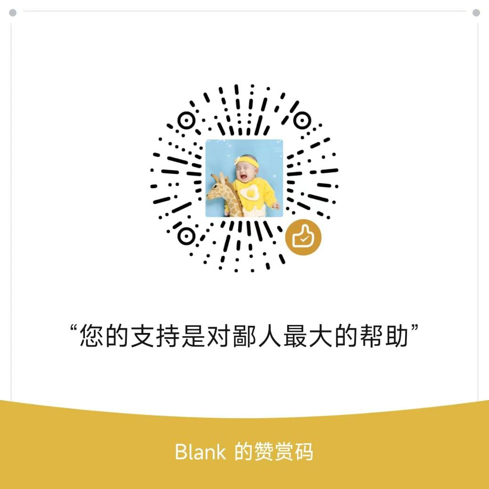

概述吧记录平时工作生活遇到的问题吧，留个念想会点儿啥本是后端开发，搞C#、dotnet种种原因吧，接触点儿c++、php、java、python、go说前端吧，也倒是会写点儿js、css、vue说只搞 web 吧，巧了，还能搞winform、wpf、qt总的来说是，啥也会，啥也不会，干啥啥不行，跑路第一名支持下原创不易，如果博客内容对大家有帮助的话，可以请我来杯冰可乐。Please enable JavaScript to view the comments